Code
library(tidyverse)
theme_set(theme_bw())library(tidyverse)
theme_set(theme_bw())For this ANOVA tutorial, we will use the InsectSprays1 dataset provided in R, which gives the results of an experiment that examined the effects of six types of insecticide spray on the numbers of insects.
Load and examine the dataset.
data(InsectSprays)
str(InsectSprays)'data.frame': 72 obs. of 2 variables:
$ count: num 10 7 20 14 14 12 10 23 17 20 ...
$ spray: Factor w/ 6 levels "A","B","C","D",..: 1 1 1 1 1 1 1 1 1 1 ...head(InsectSprays) count spray
1 10 A
2 7 A
3 20 A
4 14 A
5 14 A
6 12 AYou can read a bit about it here: help(InsectSprays).
There are two variables. count is the response variable and represents the number of insects found in a plot, and spray is the predictor variable which indicates the type of insecticide used. Modelling a quantitative response variable with a categorical factor should make you immediately think of ANOVA!
Let’s give the dataset a shorter name, so we don’t have to write out InsectSprays whenever we want to use it.
IS = InsectSpraysCheck the number of replicates (data points) for each group.
table(IS$spray)
A B C D E F
12 12 12 12 12 12 This shows that there are 12 replicates in each group. Because n is the same for each level, we can say that this is a balanced design.
Let’s plot the data using a boxplot.
IS |>
ggplot() +
aes(x = count, y = spray) +
geom_boxplot()
What are your first impressions? Does it look like there is much difference among the groups?
Boxplots are useful, but for small datasets it can be revealing to plot the actual data.
We can use a dotplot with violins.
dvp <- IS |>
ggplot() +
aes(x = count, y = spray) +
geom_violin() +
geom_jitter(width = 0, height = 0.1, alpha = .5)
dvp
Do you think the dot/violinplot is more or less informative than the boxplot?
Analysis of variance compares the variation among groups (group means from the overall mean) with the variation within groups (data points from their group means). Recall that, while useful, boxplots do not actually show us the means. So, to help with our visual impression of these data in the context of ANOVA, we’ll now add the means to the dotplot.
meanIS <- IS |> group_by(spray) |> summarise(count = mean(count))
dvp +
geom_point(
data = meanIS,
colour = "darkorange" ,
shape = "|",
size = 8
)
Though I do like boxplots, I think this is probably a more useful and revealing plot in this case, especially since we’re about to do an ANOVA, which tests for differences among means.
An ANOVA model is fit in R using the function aov(). There is a function anova(), but this instead can be used to produce an ANOVA table from an existing model.
Let’s do it.
aov(count ~ spray, data = IS)Call:
aov(formula = count ~ spray, data = IS)
Terms:
spray Residuals
Sum of Squares 2668.833 1015.167
Deg. of Freedom 5 66
Residual standard error: 3.921902
Estimated effects may be unbalancedThis shows the among-groups (spray) and within-groups (Residuals) sum of squares, and degrees of freedom. The Residual standard error is the square root of the error variance (\(\sigma_\varepsilon^2\)). It is the expected (average) absolute deviation from the individual data points to their respective group means. If required, you can remind yourself what these values represent from the lecture slides.
We can get the full ANOVA table by commanding a summary() of an aov object. (Note, a very similar output can be achieved by applying the anova() function to an aov object.)
aov(count ~ spray, data=IS) |> summary() Df Sum Sq Mean Sq F value Pr(>F)
spray 5 2669 533.8 34.7 <2e-16 ***
Residuals 66 1015 15.4
---
Signif. codes: 0 '***' 0.001 '**' 0.01 '*' 0.05 '.' 0.1 ' ' 1The full ANOVA table also gives us the Mean Squares (the SS divided by their respective df), the F value (the ratio of the within-to-among-groups Mean Squares), and the P-value.
The null hypothesis tested here is that there is no difference between the group means in the population.
\[H_0 : \mu_1 = \mu_2 = ... = \mu_g\]
The alternative hypothesis is that at least one of the groups is different to the others.
Remember that we assume that we have taken a sample of data at random from a population. The P-value is the proportion of equivalent samples in which we would obtain the observed test statistic or greater if the null hypothesis is true (i.e. no difference among groups). In other words, how likely is it that the observed differences among means have occurred just through chance? Here, the F ratio is high and P-value is tiny (< 0.0000000000000002). So, there is extremely strong evidence against the null hypothesis and we can conclude that there is indeed a difference among the group means—plants subjected to different types of spray have, on average, different numbers of insects on them.
This, in itself, is not immensely informative. Naturally, we wish to examine which groups (spray types) are different from one another.
But, first, we need to examine our assumptions.
Like for regression, diagnostic plots are the first step for examining how well the assumptions of ANOVA are met by our model. If these assumptions are not met, then the F-ratio might not behave as it should (i.e. follow an F-distribution) with repeated sampling under a true null hypothesis.
Those assumptions are:
We will focus on 3 and 4 because 1 and 2 cannot really be checked at this stage of the analysis.
Let’s make the plots.
plot(aov(count ~ spray, data=IS))


There is cause for concern here. As is often the case with counts, there seems to be some heteroscedasticity in the residuals. That is, the residual variance does not appear constant, but rather increases with the fitted value. In an ANOVA context, this means that the groups with high means have greater within-group variation. Let’s have a look at the standard deviations of the groups.
IS |> group_by(spray) |> summarise(sd = sd(count))# A tibble: 6 × 2
spray sd
<fct> <dbl>
1 A 4.72
2 B 4.27
3 C 1.98
4 D 2.50
5 E 1.73
6 F 6.21Indeed, there is a huge difference between the largest and smallest standard deviation (roughly 3.5-fold).
We can use a Levene’s test to explicitly test for evidence of heterogeneous variances. The function leveneTest() in the car package does this. Remember, the null hypothesis is that the average absolute deviations are the same in all groups.
car::leveneTest(aov(count ~ spray, data=IS))Levene's Test for Homogeneity of Variance (center = median)
Df F value Pr(>F)
group 5 3.8214 0.004223 **
66
---
Signif. codes: 0 '***' 0.001 '**' 0.01 '*' 0.05 '.' 0.1 ' ' 1The low P-value here indicates that the null hypothesis is rejected and our suspicions were correct—there are significant differences in the variations among groups.
The assumption of normality also seems suspect here, according to the fact that many data do not fall along the dotted line in the Q-Q plot. This is probably part of the same problem.
We can try transforming the response variable count and see if that helps.
We will try a log(x+1) transformation. We add the constant 1 because there are some (two) zeros in the dataset.
table(IS$count)
0 1 2 3 4 5 6 7 9 10 11 12 13 14 15 16 17 19 20 21 22 23 24 26
2 6 4 8 4 7 3 3 1 3 3 2 4 4 2 2 4 1 2 2 1 1 1 2 Let’s test the assumption for the transformed data.
IS |>
mutate(
lcount = log(count+1)
) |>
aov(formula = lcount ~ spray) |>
car::leveneTest()Levene's Test for Homogeneity of Variance (center = median)
Df F value Pr(>F)
group 5 1.8821 0.1093
66 The test is now non-significant, but 0.1 is still a fairly small P-value. Looking at the following boxplot, it seems like the log transformation might be too severe—the groups with smaller means now seem to have higher variance than those with larger means.
IS |>
mutate(
lcount = log(count+1)
) |>
ggplot() +
aes(x = lcount, y = spray) |>
geom_boxplot()
Now try instead a square-root transformation.
IS |>
mutate(
sqrt_count = sqrt(count)
) |>
aov(formula = sqrt_count ~ spray) |>
car::leveneTest()Levene's Test for Homogeneity of Variance (center = median)
Df F value Pr(>F)
group 5 0.8836 0.4971
66 IS |>
mutate(
sqrt_count = sqrt(count)
) |>
ggplot() +
aes(x = sqrt_count, y = spray) |>
geom_boxplot()
This looks like a better transformation for this model.
Fit the model.
IS <- IS |> mutate( sqrt_count = sqrt(count) )
aov(sqrt_count ~ spray, data=IS) |> summary() Df Sum Sq Mean Sq F value Pr(>F)
spray 5 88.44 17.688 44.8 <2e-16 ***
Residuals 66 26.06 0.395
---
Signif. codes: 0 '***' 0.001 '**' 0.01 '*' 0.05 '.' 0.1 ' ' 1Now show up the diagnostic plots for this model.
aov(sqrt_count ~ spray, data=IS) |> plot()


Much better!
This clearly has not made a substantial impact on the result of the hypothesis test for a difference among group means, but we can be happier that the inference is correct.
Now let’s look at the differences among groups.
Tukey’s Honest Significant Differences (HSD) are a method of adjusting for the fact that, in a post-hoc analysis such as this, there are simultaneously hypothesis tests being done. Across all these tests, the probability of erroneously finding a significant difference (i.e. making a Type I error) is greater than the nominated alpha value (usually 0.05). The HSD method makes each individual test slightly more conservative so that the family-wise error rate across all tests is conserved.
Tukey’s HSD can be implemented in R as follows.
aov(sqrt_count ~ spray, data=IS) |> TukeyHSD() Tukey multiple comparisons of means
95% family-wise confidence level
Fit: aov(formula = sqrt_count ~ spray, data = IS)
$spray
diff lwr upr p adj
B-A 0.1159530 -0.6369601 0.8688661 0.9975245
C-A -2.5158217 -3.2687349 -1.7629086 0.0000000
D-A -1.5963245 -2.3492377 -0.8434114 0.0000006
E-A -1.9512174 -2.7041305 -1.1983042 0.0000000
F-A 0.2579388 -0.4949744 1.0108519 0.9144964
C-B -2.6317747 -3.3846879 -1.8788616 0.0000000
D-B -1.7122775 -2.4651907 -0.9593644 0.0000001
E-B -2.0671704 -2.8200835 -1.3142572 0.0000000
F-B 0.1419858 -0.6109274 0.8948989 0.9935788
D-C 0.9194972 0.1665841 1.6724103 0.0080813
E-C 0.5646043 -0.1883088 1.3175175 0.2512638
F-C 2.7737605 2.0208474 3.5266736 0.0000000
E-D -0.3548928 -1.1078060 0.3980203 0.7366389
F-D 1.8542633 1.1013502 2.6071764 0.0000000
F-E 2.2091561 1.4562430 2.9620693 0.0000000This table above has each possible pairwise comparison of groups. The number of comparisons is \(g(g – 1)/2 = 15\) (where \(g\) = the number of groups = 6).
For each pairwise comparison, the table gives the estimated difference (diff), the lower (lwr) and upper (upr) confidence intervals and the p-value (p adj) which tests whether the difference is statistically significant. The confidence intervals and the p-value are adjusted for the fact that multiple simultaneous comparisons are being made, and so are more conservative than if they were done separately. Out of the 15 comparisons, 10 have very low p-values.
Here are the intervals shown on a plot.
aov(sqrt_count ~ spray, data=IS) |>
TukeyHSD() |>
plot(las=1)
This plot provides a visual impression of the size and adjusted confidence intervals for each comparison. An interval that includes zero indicates that the difference between those groups is non-significant (i.e. the null hypothesis of no difference is retained). This was the case for B-A, F-A, F-B, E-C, and E-D. From the earlier plots, this makes sense. A-B-F seem to be quite similar, as do E-C-D.
We will analyse a dataset (which I invented) from an experiment that manipulated salinity and temperature and measured the growth of oysters in these different regimes.
oys <- read_csv("https://www.massey.ac.nz/~anhsmith/data/oystergrowth.csv")
str(oys)spc_tbl_ [60 × 4] (S3: spec_tbl_df/tbl_df/tbl/data.frame)
$ ...1 : num [1:60] 1 2 3 4 5 6 7 8 9 10 ...
$ Growth : num [1:60] 5.93 5.48 5.65 6.28 6.31 ...
$ Salinity : chr [1:60] "Low" "Low" "Low" "Low" ...
$ Temperature: chr [1:60] "Low" "Low" "Low" "Low" ...
- attr(*, "spec")=
.. cols(
.. ...1 = col_double(),
.. Growth = col_double(),
.. Salinity = col_character(),
.. Temperature = col_character()
.. )
- attr(*, "problems")=<externalptr> The response variable is Growth.
There are two factors:
Factor A: Temperature, a = 3 levels (High, Medium, and Low) Factor B: Salinity, b = 2 levels (High and Low),
table(oys$Salinity, oys$Temperature)
High Low Med
High 10 10 10
Low 10 10 10The table above shows a count of 10 data points per combination of Temperature and Salinity. The equal number of observations among cells shows the experiment has a crossed and balanced design.
The Temperature variable is ordinal, having a natural order. R does not know this automatically.
factor(oys$Temperature) |> levels()[1] "High" "Low" "Med" We can tell R the correct order of the factors by turning them into ordered factors.
oys <- oys |>
mutate(
Temperature = factor(
Temperature,
levels = c("Low","Med","High")
),
Salinity = factor(
Salinity,
levels = c("Low","High")
)
)We will first examine separately the effects of Temperature and Salinity on Growth, first focusing on Temperature.
ggplot(oys) +
aes(x = Growth, y = Temperature) +
geom_boxplot()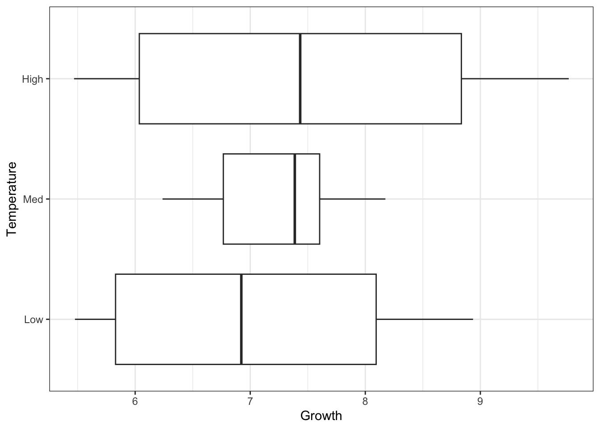
ggplot(oys) +
aes(x = Growth, y = Temperature) +
geom_violin() +
geom_jitter(width=0, height=.1, alpha = .4) 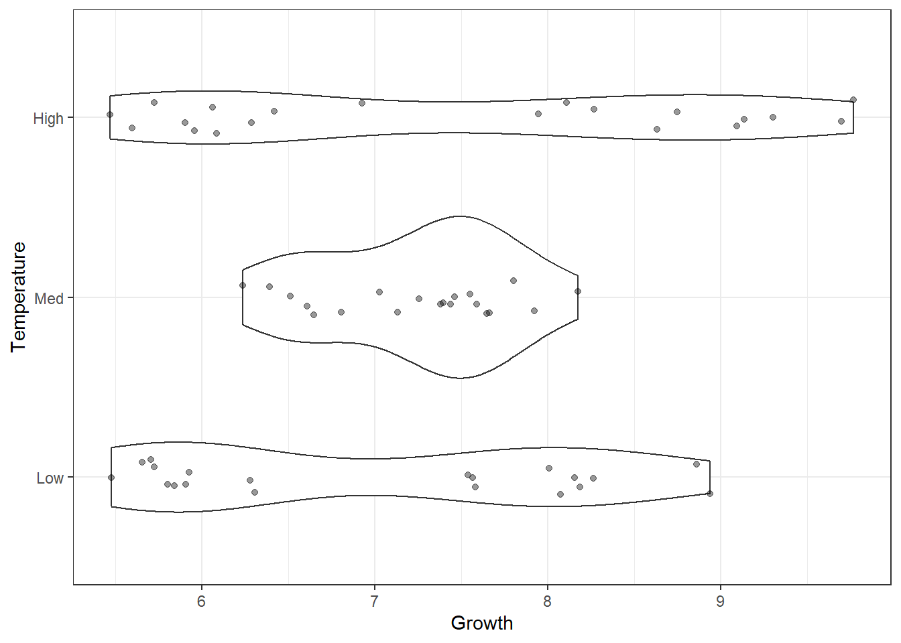
What are your first impressions of these data? Do you think that Temperature has an effect on the Growth of oysters here? Do you think an ANOVA is an appropriate analysis to use? Would you expect the assumptions of ANOVA to be upheld?
Two things stand out. Firstly, it does not look like Temperature has a strong effect Growth—the variation within the groups looks to be much larger than the variation among groups. The one-way ANOVA agrees.
aov(Growth ~ Temperature, data=oys) |> summary() Df Sum Sq Mean Sq F value Pr(>F)
Temperature 2 2.18 1.088 0.784 0.461
Residuals 57 79.10 1.388 Secondly, the data seem to have different variances among the three groups. We can use a Levene’s test to confirm this.
car::leveneTest(y = oys$Growth, group = oys$Temperature)Levene's Test for Homogeneity of Variance (center = median)
Df F value Pr(>F)
group 2 27.45 4.475e-09 ***
57
---
Signif. codes: 0 '***' 0.001 '**' 0.01 '*' 0.05 '.' 0.1 ' ' 1Now make the same plots for Salinity and Growth.
The same general result was obtained for Salinity as it was for Temperature—there was not apparent effect of Salinity on Growth, and the dispersions among groups are significantly different (although only marginally so).
Now we will examine Growth simultaneously in terms of both Temperature and Salinity.
Let’s make a plot.
g_oys_st <- oys |>
ggplot() +
aes(x = Temperature, y = Growth, colour = Salinity) +
geom_point(
alpha = .4,
position = position_dodge(width = .3)
)
g_oys_st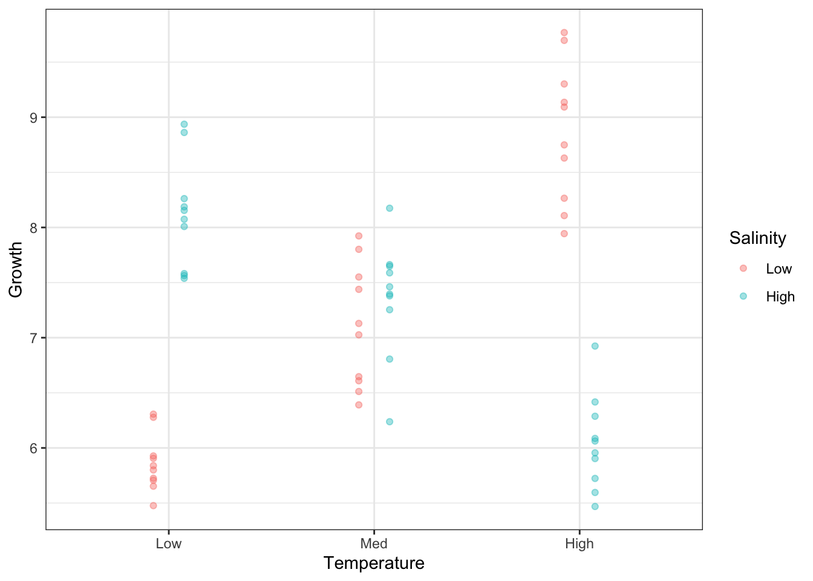
Let’s add the means to the plot above. First, let’s calculate the means of each combination of Temperature and Salinity.
mean_growth <- oys |>
group_by(Temperature, Salinity) |>
summarise(Growth = mean(Growth))
mean_growth# A tibble: 6 × 3
# Groups: Temperature [3]
Temperature Salinity Growth
<fct> <fct> <dbl>
1 Low Low 5.86
2 Low High 8.12
3 Med Low 7.10
4 Med High 7.36
5 High Low 8.87
6 High High 6.04Now add the means as lines.
g_oys_st +
geom_line(
data = mean_growth,
mapping = aes(group = Salinity),
position = position_dodge(width = .3)
)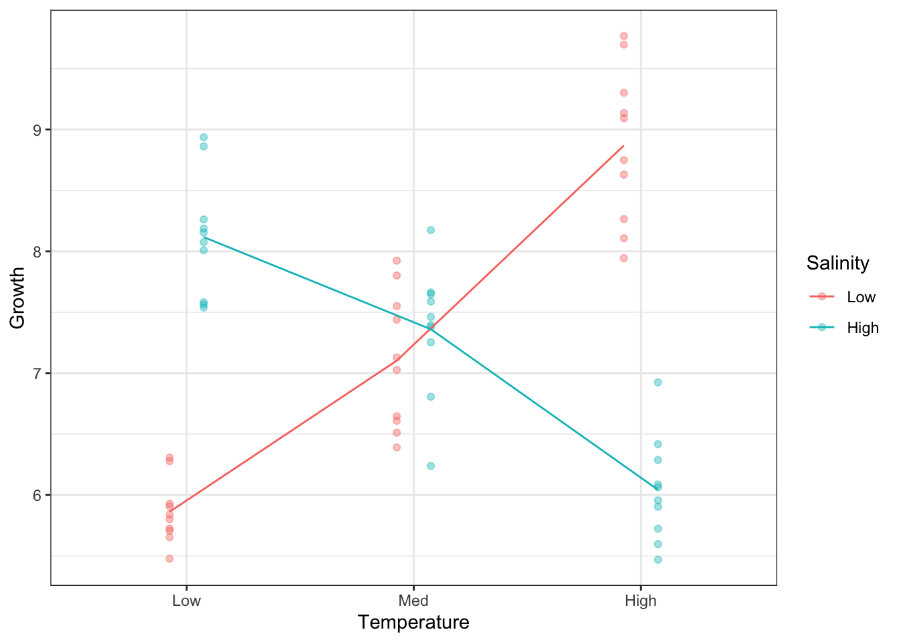
Note, we can make this plot without pre-calculating the means, by way of the stat_summary() function.
g_oys_st +
stat_summary(
aes(group = Salinity),
fun = mean,
geom="line",
position = position_dodge(width = .3)
)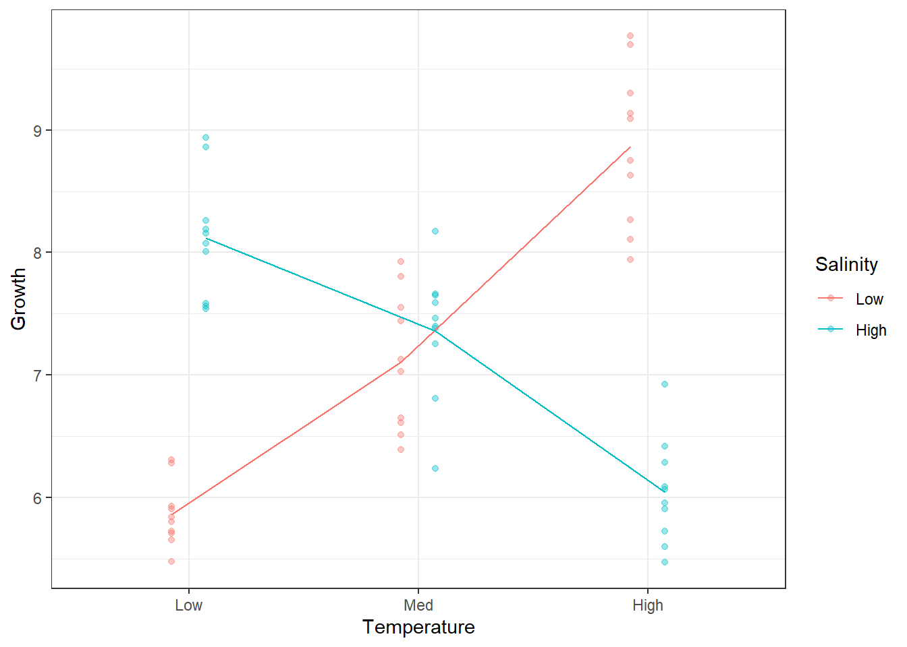
So, our one-group analysis was unable to tell the real story in this dataset.
Before doing a formal two-way ANOVA, try to understand this graph.
Do you expect to find a significant interaction?
Why do you think there was no discernable pattern in the one-factor analyses?
Will differing dispersions among groups still be a problem?
OK, let’s take a look at an ANOVA model with both factors included, plus the interaction. For this, you can write the full formula: Temperature + Salinity + Temperature:Salinity. In R, Temperature:Salinity is syntax for the interaction between Temperature and Salinity. Alternatively, this formula can be specified using this syntax: Temperature*Salinity. This is equivalent to writing the full formula explicitly. Both factors, and their interaction, are included.
aov(Growth ~ Temperature * Salinity, data = oys) |> summary() Df Sum Sq Mean Sq F value Pr(>F)
Temperature 2 2.18 1.09 4.388 0.0171 *
Salinity 1 0.16 0.16 0.660 0.4200
Temperature:Salinity 2 65.54 32.77 132.148 <2e-16 ***
Residuals 54 13.39 0.25
---
Signif. codes: 0 '***' 0.001 '**' 0.01 '*' 0.05 '.' 0.1 ' ' 1First, we look at the interaction Temperature:Salinity. It is highly significant and the most important source of explained variation in the model. This was abundantly clear when we plotted Growth according to both factors simultaneously. The mean lines on the plot were not parallel, which is indicative of an interaction.
Temperature and Salinity have an effect on Growth but they are no independent. The effect of Temperature on Growth depends on Salinity, and the effect of Salinity on Growth depends on Temperature.
Without taking Salinity into account, Temperature has no apparent effect. For low Salinity environments, growth increases with increasing Temperature. For high Salinity, the opposite is true: Growth decreases with increasing Temperature.
There is an important lesson to be learned here. A variable that is important for explaining variation in the response, but not included in the model, can obfuscate the relationship between the response and the variables that you have included, particularly when interactions are present.
So-called ‘latent’ variables cause problems in science. This highlights the importance of knowing all the important causes of variation in a measured response. Two strategies may then be employed. You can hold a variable constant (e.g., examine temperature in medium salinity environments) but this restricts the inference space of your conclusions (they would only be valid for medium salinity). Alternatively, you can include a variable in the design (or measure it if it is not easily manipulated), ensuring that it is accounted for in any analyses.
Another potential consequence of an unknown latent variable is excess dispersion in some groups. This resulted in a significant departure from group homogeneity in the Levene’s test for both Salinity and Temperature when the other was left out.
Another thing to note is that, when the interaction is significant, we don’t need to worry about the main effects of the two factors.
The next step in the analysis is to test which levels of the factors differ from each other, using a multiple comparisons procedure, such as Tukey’s Honest Significant Differences. Because the interaction is significant, it is the comparison within the interaction term that will be of most interest. There are six cells (3×2), so the number of comparisons within the interaction term will be six-choose-two:
choose(6,2)[1] 15Run a Tukey analysis.
aov(Growth~Salinity*Temperature, data=oys) |> TukeyHSD() Tukey multiple comparisons of means
95% family-wise confidence level
Fit: aov(formula = Growth ~ Salinity * Temperature, data = oys)
$Salinity
diff lwr upr p adj
High-Low -0.1044926 -0.3622801 0.1532949 0.4199781
$Temperature
diff lwr upr p adj
Med-Low 0.2424207 -0.13709813 0.6219396 0.2808614
High-Low 0.4664160 0.08689709 0.8459349 0.0124178
High-Med 0.2239952 -0.15552366 0.6035141 0.3366941
$`Salinity:Temperature`
diff lwr upr p adj
High:Low-Low:Low 2.2550543 1.59707046 2.91303820 0.0000000
Low:Med-Low:Low 1.2409233 0.58293938 1.89890712 0.0000118
High:Med-Low:Low 1.4989726 0.84098870 2.15695644 0.0000002
Low:High-Low:Low 3.0072339 2.34925004 3.66521778 0.0000000
High:High-Low:Low 0.1806524 -0.47733150 0.83863624 0.9642520
Low:Med-High:Low -1.0141311 -1.67211494 -0.35614720 0.0004194
High:Med-High:Low -0.7560818 -1.41406562 -0.09809788 0.0155079
Low:High-High:Low 0.7521796 0.09419571 1.41016345 0.0162888
High:High-High:Low -2.0744020 -2.73238583 -1.41641809 0.0000000
High:Med-Low:Med 0.2580493 -0.39993455 0.91603319 0.8541174
Low:High-Low:Med 1.7663107 1.10832678 2.42429452 0.0000000
High:High-Low:Med -1.0602709 -1.71825476 -0.40228702 0.0002074
Low:High-High:Med 1.5082613 0.85027746 2.16624520 0.0000001
High:High-High:Med -1.3183202 -1.97630408 -0.66033634 0.0000033
High:High-Low:High -2.8265815 -3.48456541 -2.16859767 0.0000000First, in the single-factor comparisons (ignoring the other factor), only one comparison is significant—between high and low temperatures. The difference is only 0.46, however, and we know that this comparison does not represent the real effects of temperature on growth. It is marginalised over salinity, whereas we now know that the most important effects of temperature are, in fact, conditional on salinity.
For the interaction comparisons, 13 out of 15 are significantly different. You should refer to the interaction plot on the previous page (or on your screen) to make some sense of which of the comparisons are large or small. For example, the first line gives the comparison between the low-salinity-low-temperature group and the high-salinity-low-temperature group (i.e. the two groups to the left of the interaction plot above). It is one of the largest absolute differences and is highly significant. The greatest difference is on the ninth line of the interaction comparisons: low-salinity-high-temperature vs low-salinity-low-temperature (i.e., those at opposite ends of the low-salinity line on the interaction plot).
We can also plot the comparisons and corresponding Tukey intervals. The which argument allows you to restrict the output to particular terms (here, the interaction).
tuk <- aov(Growth~Salinity*Temperature, data=oys) |>
TukeyHSD(which = "Salinity:Temperature")
par(mar=c(5,10,3,1)) # adjust the margins so you can read the labels
plot(tuk, las = 1)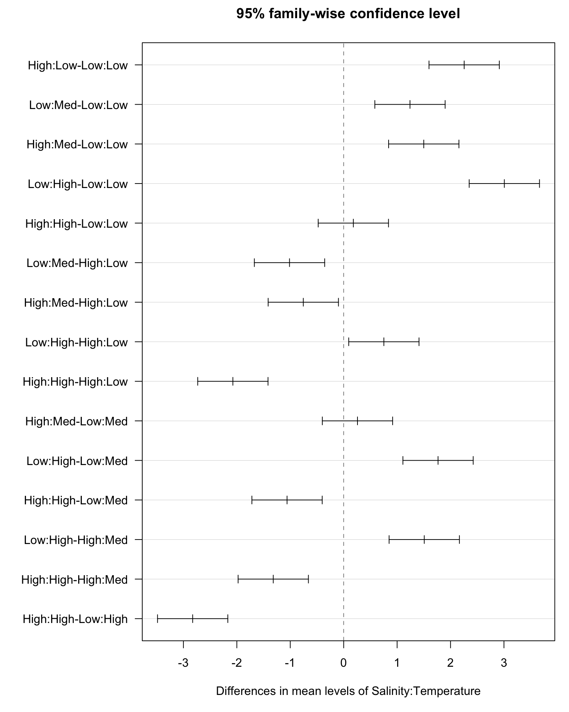
Here, we will use a dataset2 containing the weights of 40 goats before and after an experiment where 20 were given a standard drenching treatment and 20 were given a more intensive drenching treatment. There are three columns corresponding to the treatment (Tmt), the gain in weight over the experiment (WtGain, kg), and the initial weight at the start of the experiment (InitialWt, kg).
3 Source: Saville DJ, Wood GR (1991) Statistical Methods: The Geometric Approach. Springer, New York.
goat <- read_table("https://www.massey.ac.nz/~anhsmith/data/goats.txt")
str(goat)spc_tbl_ [40 × 3] (S3: spec_tbl_df/tbl_df/tbl/data.frame)
$ Tmt : chr [1:40] "standard" "standard" "standard" "standard" ...
$ WtGain : num [1:40] 5 3 8 7 6 4 8 6 7 5 ...
$ InitialWt: num [1:40] 21 24 21 22 23 26 22 23 24 20 ...
- attr(*, "spec")=
.. cols(
.. Tmt = col_character(),
.. WtGain = col_double(),
.. InitialWt = col_double()
.. )The initial weight is included because of commonly observed biological phenomenon known as “regression to the norm”, where lighter animals even the ledger by gaining more weight than the heavier animals. By using an ANCOVA model that incorporates the initial weight as a covariate can therefore give us more power to detect an effect of the treatment.
Let’s start with a boxplot of the response variable by reference to the predictor of interest, treatment.
goat |>
ggplot() +
aes(x = WtGain, y = Tmt) +
geom_boxplot()
There seems to be a reasonable effect of treatment. This is apparent in an ANOVA fitted without the covariate.
aov(WtGain ~ Tmt, data = goat) |> summary() Df Sum Sq Mean Sq F value Pr(>F)
Tmt 1 16.9 16.900 4.13 0.0492 *
Residuals 38 155.5 4.092
---
Signif. codes: 0 '***' 0.001 '**' 0.01 '*' 0.05 '.' 0.1 ' ' 1Sure enough, effect of the treatment is significant, though it is marginally so. The effect size can be viewed in a linear model summary.
lm(WtGain ~ Tmt, data=goat) |> summary()
Call:
lm(formula = WtGain ~ Tmt, data = goat)
Residuals:
Min 1Q Median 3Q Max
-3.85 -1.55 0.15 1.15 4.45
Coefficients:
Estimate Std. Error t value Pr(>|t|)
(Intercept) 6.8500 0.4523 15.144 <2e-16 ***
Tmtstandard -1.3000 0.6397 -2.032 0.0492 *
---
Signif. codes: 0 '***' 0.001 '**' 0.01 '*' 0.05 '.' 0.1 ' ' 1
Residual standard error: 2.023 on 38 degrees of freedom
Multiple R-squared: 0.09803, Adjusted R-squared: 0.07429
F-statistic: 4.13 on 1 and 38 DF, p-value: 0.04916From here, we can see that the estimated difference between the treatments is 1.3 kg—the mean for intensive is 6.85 kg and the mean for standard is 5.55 kg.
goat |> group_by(Tmt) |> summarise(mean = mean(WtGain))# A tibble: 2 × 2
Tmt mean
<chr> <dbl>
1 intensive 6.85
2 standard 5.55The fitted model explains only 10% of the variation in the data. The average difference between the fitted means and the observations is 2.023, which is greater than the estimated difference in means. So, all in all, there is a significant effect but it is not large. We can estimate a 95% confidence interval for this difference using \(\hat d + t_{df,[0.025,0.975]} \times \text{SE}(\hat d)\).
-1.3 + qt(c(.025,.975), 38) * 0.6397[1] -2.595004947 -0.004995053So, the confidence interval for the difference is {0.005 , 2.595}.
Now we will look at the effect of the covariate, InitialWt.
goat |>
ggplot() +
aes(x = InitialWt, y = WtGain) +
geom_point(alpha = .4)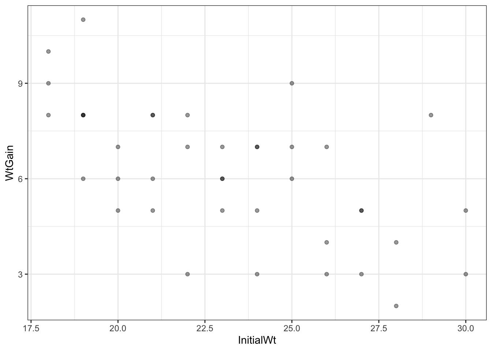
We can see that there is a relationship between the initial weight of the goats and the gain in weight, in that the goats that were lighter at the start of the experiment gained more weight.
Look at a linear model using this predictor alone.
lm(WtGain ~ InitialWt, data = goat) |> summary()
Call:
lm(formula = WtGain ~ InitialWt, data = goat)
Residuals:
Min 1Q Median 3Q Max
-3.607 -1.206 0.163 1.054 3.871
Coefficients:
Estimate Std. Error t value Pr(>|t|)
(Intercept) 14.39581 1.85047 7.780 2.22e-09 ***
InitialWt -0.35403 0.07906 -4.478 6.68e-05 ***
---
Signif. codes: 0 '***' 0.001 '**' 0.01 '*' 0.05 '.' 0.1 ' ' 1
Residual standard error: 1.723 on 38 degrees of freedom
Multiple R-squared: 0.3454, Adjusted R-squared: 0.3282
F-statistic: 20.05 on 1 and 38 DF, p-value: 6.681e-05For every extra kilogram of weight at the start, the goat is expected to gain 354 g less over the course of the experiment. The effect is highly significant, and explains 35% of the variation in weight gain. We are not interested in this effect though, per se, because it has been demonstrated many times before. We are most interested in the effect of the treatment.
Now we will look at the effect of the Tmt in the context of the covariate, InitialWt.
ggoat <- goat |>
ggplot() +
aes(x = InitialWt, y = WtGain, colour = Tmt) +
geom_point(alpha = .4)
ggoat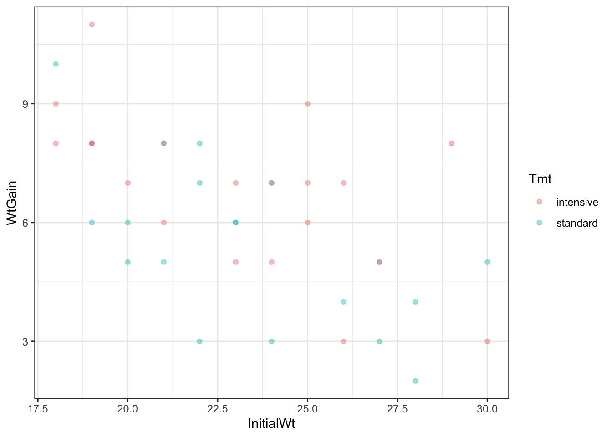
This shows the effects of both predictors simultaneously. We can envisage two lines on this graph—one through the Intensive points and one through the Standard points. The difference in the heights of these lines is the effect of treatment, the slope of the lines is the effect of the initial weight, and any difference in the slopes of the lines is the interaction between the two predictors.
Now fit a model including both these predictors simultaneously, including any interaction.
aov(WtGain ~ InitialWt * Tmt, data=goat) |> summary() Df Sum Sq Mean Sq F value Pr(>F)
InitialWt 1 59.55 59.55 22.211 3.6e-05 ***
Tmt 1 16.00 16.00 5.966 0.0196 *
InitialWt:Tmt 1 0.34 0.34 0.128 0.7230
Residuals 36 96.51 2.68
---
Signif. codes: 0 '***' 0.001 '**' 0.01 '*' 0.05 '.' 0.1 ' ' 1The first thing is to check for a significant interaction. There is not, so we can assume that there is no difference in the slope of the lines for Intensive and Standard treatments. Thus, there is no evidence that the effect of the initial weight varies among the two treatments, or that the treatment effect varies according to the initial weight.
Applying the drop1() function supports that the more parsimonious model is that without the interaction.
aov(WtGain ~ InitialWt * Tmt, data = goat) |> drop1()Single term deletions
Model:
WtGain ~ InitialWt * Tmt
Df Sum of Sq RSS AIC
<none> 96.514 43.232
InitialWt:Tmt 1 0.34225 96.857 41.374Now we can confidently fit the model with just the two main effects.
aov(WtGain ~ InitialWt + Tmt, data = goat) |> summary() Df Sum Sq Mean Sq F value Pr(>F)
InitialWt 1 59.55 59.55 22.75 2.87e-05 ***
Tmt 1 16.00 16.00 6.11 0.0182 *
Residuals 37 96.86 2.62
---
Signif. codes: 0 '***' 0.001 '**' 0.01 '*' 0.05 '.' 0.1 ' ' 1I have put the treatment in the model after the initial weight, so we effectively obtain the Type II sum of squares for treatment, i.e., the variation that is attributable to treatment only, after all the variation attributable to initial weight has been accounted for. This provides a more conservative test for our effect of interest. It matters little in this case, however. Review the table for when treatment alone is fit.
aov(WtGain ~ Tmt, data = goat) |> summary() Df Sum Sq Mean Sq F value Pr(>F)
Tmt 1 16.9 16.900 4.13 0.0492 *
Residuals 38 155.5 4.092
---
Signif. codes: 0 '***' 0.001 '**' 0.01 '*' 0.05 '.' 0.1 ' ' 1The SS for treatment has decreased only slightly from the inclusion of initial weight, from 16.9 to 16.0.
More importantly, though, the F-ratio has increased by 50% and the P-value has decreased from 0.05 to 0.02! Just from including another (potentially competing) predictor in the model! Take a moment to consider how this might have happened.
The key here is the decrease in the residual SS from 156 to 97. The F-ratio is calculated from the treatment SS divided by the residual SS. Therefore, if you decrease the residual SS, you can increase the value of F. By attributing variation to a covariate, it is no longer considered to be part of the random, unexplained variation. Our ability to detect an effect of the treatment is therefore strengthened.
This is also apparent in the linear model summary.
lm(WtGain ~ InitialWt + Tmt, data=goat) |> summary()
Call:
lm(formula = WtGain ~ InitialWt + Tmt, data = goat)
Residuals:
Min 1Q Median 3Q Max
-2.9716 -1.2419 -0.0338 0.9878 3.2231
Coefficients:
Estimate Std. Error t value Pr(>|t|)
(Intercept) 14.96661 1.75261 8.540 2.82e-10 ***
InitialWt -0.35137 0.07424 -4.733 3.21e-05 ***
Tmtstandard -1.26486 0.51169 -2.472 0.0182 *
---
Signif. codes: 0 '***' 0.001 '**' 0.01 '*' 0.05 '.' 0.1 ' ' 1
Residual standard error: 1.618 on 37 degrees of freedom
Multiple R-squared: 0.4382, Adjusted R-squared: 0.4078
F-statistic: 14.43 on 2 and 37 DF, p-value: 2.331e-05While the estimated effect of the treatment has reduced from a difference of 1.30 to 1.26, the standard error has reduced from 0.64 to 0.51. We can recalculate the confidence interval for the difference (we remove a degree of freedom for the fact that we are also estimating a regression slope).
-1.26 + qt(c(.025,.975),37) * 0.51169[1] -2.2967824 -0.2232176The interval for the difference {0.223 , 2.297} is quite a bit smaller than the one obtained earlier when fitting treatment alone {0.005 , 2.595}, and no longer brushes so close to zero.
We can get ggplot to fit two linear models (one for each treatment) on our scatterplot.
ggoat + stat_smooth(method="lm")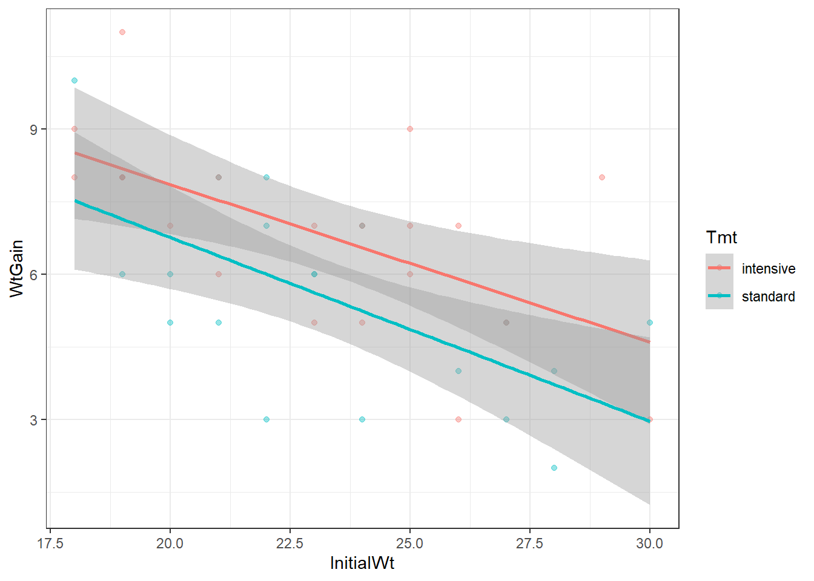
However, notice that the slopes are different. In our model, the slopes are the same, because it doesn’t have an interaction between InitialWt and Tmt. This is where the visreg package is very useful!
library(visreg)
lm(WtGain ~ InitialWt + Tmt, data=goat) |>
visreg(xvar = "InitialWt", by = "Tmt", overlay = TRUE, gg = TRUE)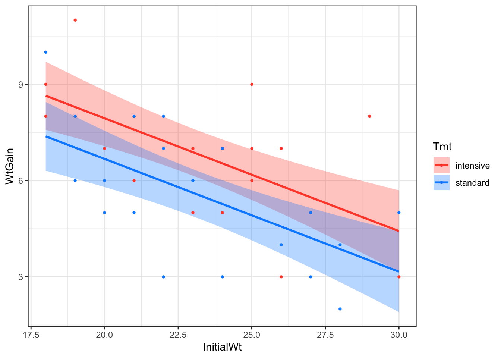
alfalfaThis dataset is from the R package faraway. The alfalfa dataset frame has 25 rows and 4 columns. Data comes from an experiment to test the effects of seed inoculum, irrigation and shade on alfalfa yield.
This data frame contains the following columns:
shade: Distance of location from tree line divided into 5 shade areas
irrigation: Irrigation effect divided into 5 levels
inoculum: Four types of seed incolum, A-D with E as control
yield: Dry matter yield of alfalfa
library(tidyverse)
data(alfalfa, package = "faraway")
head(alfalfa, 25)Obtain the main effects and interaction plots.
Old style Main effects plots:
mod1 <- aov(yield ~ shade + irrigation + inoculum,
data=alfalfa)
library(effects)
plot(allEffects(mod1))Old style Interaction effects plots:
mod2 <- aov(
yield ~ shade*irrigation*inoculum - shade:irrigation:inoculum,
data = alfalfa
)
library(effects)
mod1 <- lm(yield ~ shade * irrigation, data = alfalfa)
effect('shade:irrigation',
mod = mod1) |>
plot(multiline = TRUE)mod2 <- lm(yield ~ shade * inoculum, data = alfalfa)
effect('shade:inoculum',
mod=mod2) |>
plot(multiline=TRUE)mod3 <- lm(yield ~ irrigation * inoculum, data = alfalfa)
effect('irrigation:inoculum',
mod=mod3) |>
plot(multiline=TRUE)ggplot2 can produce good main effects and interaction plots but the R codes for this task are not short. For main effects plot-
library(ggplot2)
plot1 <- ggplot(alfalfa) +
aes(x = shade, y = yield) +
stat_summary(fun = mean, geom = "point", aes(group = 1)) +
stat_summary(fun = mean, geom = "line", aes(group = 1)) +
geom_hline(aes(yintercept = mean(yield)), alpha = .7) +
ggtitle("Main effect of shade")
plot2 <- ggplot(alfalfa) +
aes(x = irrigation, y = yield) +
stat_summary(fun = mean, geom = "point", aes(group = 1)) +
stat_summary(fun = mean, geom = "line", aes(group = 1)) +
geom_hline(aes(yintercept = mean(yield)), alpha = .7) +
ggtitle("Main effect of irrigation")
plot3 <- ggplot(alfalfa) +
aes(x = inoculum, y = yield) +
stat_summary(fun = mean, geom = "point", aes(group = 1)) +
stat_summary(fun = mean, geom = "line", aes(group = 1)) +
geom_hline(aes(yintercept = mean(yield)), alpha = .7) +
ggtitle("Main effect of inoculum")
library(patchwork)
plot1+plot2+plot3For interaction plot-
#Interactions Plot
plot4 <- ggplot(alfalfa) +
aes(x = shade, y = yield,
group = irrigation, colour = irrigation) +
stat_summary(fun=mean, geom="point")+
stat_summary(fun=mean, geom="line")+
geom_hline(aes(yintercept = mean(yield)), alpha = .7) +
ggtitle("shade*irrigation interaction")
plot5 <- ggplot(alfalfa) +
aes(x = inoculum, y = yield,
group = irrigation, colour = irrigation) +
stat_summary(fun=mean, geom="point")+
stat_summary(fun=mean, geom="line")+
geom_hline(aes(yintercept = mean(yield)), alpha = .7) +
ggtitle("inoculum*irrigation interaction")
plot6 <- ggplot(alfalfa) +
aes(x = shade, y = yield,
group = inoculum, colour = inoculum) +
stat_summary(fun=mean, geom="point")+
stat_summary(fun=mean, geom="line")+
geom_hline(aes(yintercept = mean(yield)), alpha = .7) +
ggtitle("shade*inoculum interaction")
plot4 / plot5 / plot6Fit one-way ANOVA models to this dataset.
anova1 <- aov(yield ~ shade, data = alfalfa)
summary(anova1)
anova2 <- aov(yield ~ irrigation, data = alfalfa)
summary(anova2)
anova3 <- aov(yield ~ inoculum, data = alfalfa)
summary(anova3)
plot(TukeyHSD(anova1))plot(TukeyHSD(anova2))plot(TukeyHSD(anova3))Fit a three-factor (additive) ANOVA model without interactions.
anova1 <- aov(yield ~ shade + irrigation + inoculum,
data = alfalfa)
summary(anova1)
library(ggfortify)
autoplot(anova1, 1)For the base R style four diagnostic plots, use plot(anova1) and set the par.
par(mfrow=c(2,2))
plot(anova1)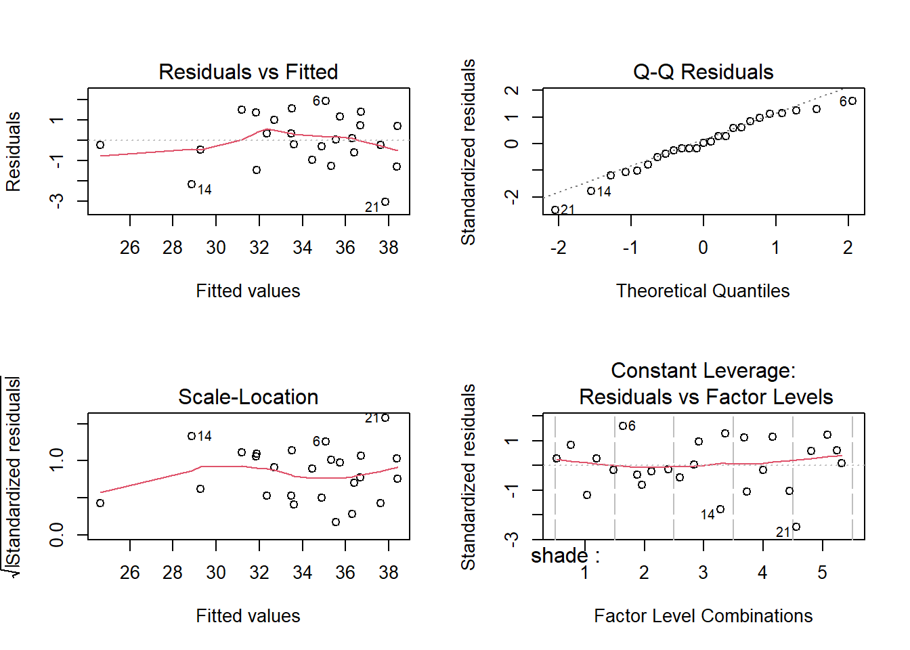
Fit the indicator variable regression model of yield ~ inoculum
alfalfa <- alfalfa |>
mutate(
I.A = as.numeric(inoculum=="A"),
I.B = as.numeric(inoculum=="B"),
I.C = as.numeric(inoculum=="C"),
I.D = as.numeric(inoculum=="D")
)
indicator.reg <- lm(yield ~ I.A + I.B + I.C + I.D,
data = alfalfa)
summary(indicator.reg)Note that this regression allows the treatments to be compared with the control.
shade is a categorical variable of factor codes but let us (incorrectly) treat it as numerical (and if the actual distances are given, then the distance variable becomes a covariate). Fit ANCOVA of yield on the inoculum factor and shade covariate.
R:
ancova.model <- lm(yield ~ as.numeric(shade) * inoculum,
data = alfalfa)
summary(ancova.model)In a two-factor experiment, one of the factors was assigned to main plot (main-plot factor), the second factor, called the subplot factor, was assigned into subplots. The dataset https://www.massey.ac.nz/~kgovinda/data/plots.RData gives the experimental set up. Perform the ANOVA for this basic split-plot experiment.
R:
url1 <- "https://www.massey.ac.nz/~anhsmith/data/plots.RData"
download.file(url = url1, destfile = "plots.RData")
load("plots.RData")
plotssp.model <- aov(yield ~ block + A*B + Error(block/A),
data=plots)
summary(sp.model)#Incorrect model
summary(aov(yield ~ block + A*B ,
data=plots))Data originally sourced from Beall, G. 1942. The transformation of data from entomological field experiments. Biometrika 32:243.↩︎
Data originally sourced from Beall, G. 1942. The transformation of data from entomological field experiments. Biometrika 32:243.↩︎
Data originally sourced from Beall, G. 1942. The transformation of data from entomological field experiments. Biometrika 32:243.↩︎